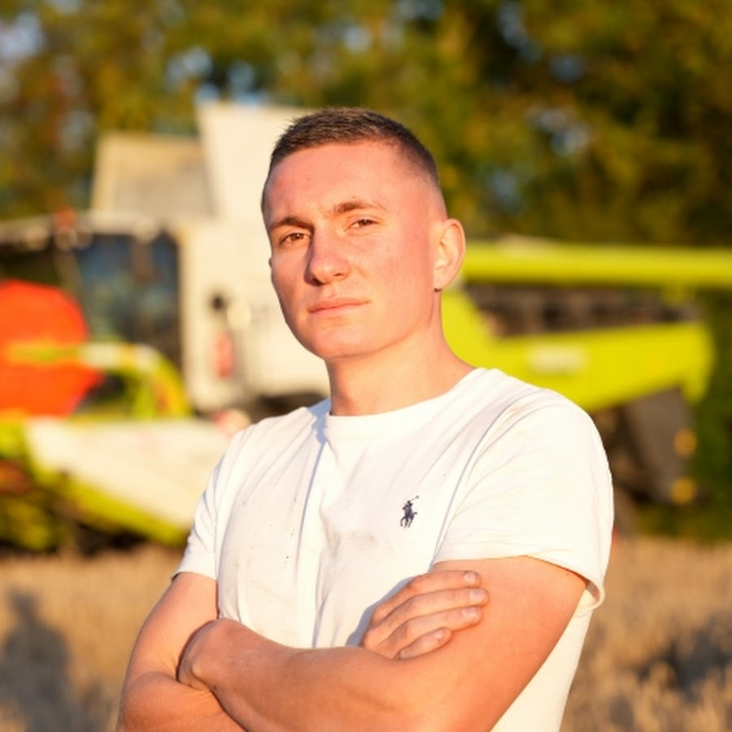
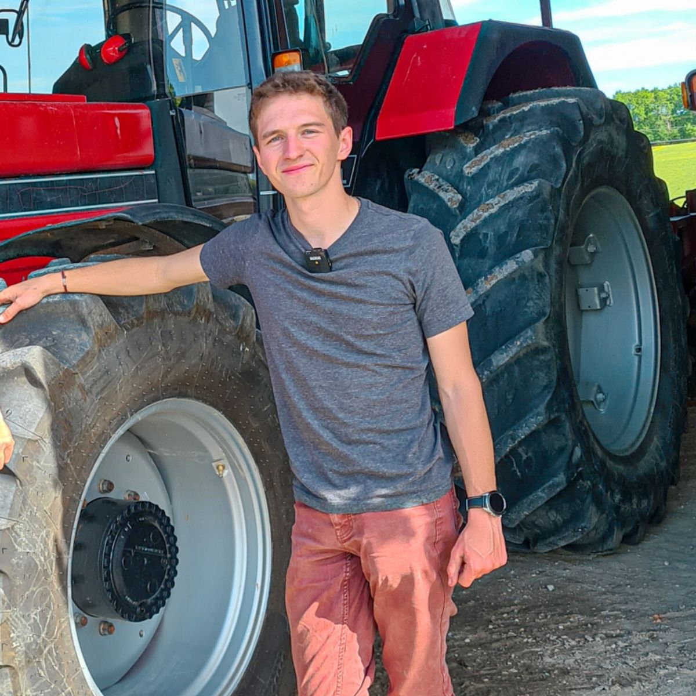

fondé par Victoria RUF
en 2024
D'où vient cette passion ?
Ayant grandi en campagne entourée d'animaux et de champs, ma passion pour l'agriculture s'est naturellement développée.
En 2019 : lors de mon année de 4ème, je me retrouve dans une classe essentiellement composée de personnes qui voulaient devenir agriculteurs.
Discuter avec eux m'a fait découvrir une nouvelle passion : l'agriculture.
J'ai alors commencé par jouer à un jeu vidéo intitulé :
Ce jeu simule la gestion d'une ferme en permettant l'élevage d'animaux, la culture, la vente des récoltes et la sylviculture.
Il m'a permit d'apprendre les bases de l'agriculture.
De plus, y jouer m'a rapproché de certaines personnes partageant cette même passion !
Après ça, j'ai continué en regardant des vidéos d'agriculteurs qui partageaient leur vie sur les réseaux sociaux.
Mes inspirations :
 MarcA2C Stervio
Ma formation :
Première année de BUT Réseaux et Télécommunications à l'IUT d'Ifs.
Cette formation m'apprends à concevoir, installer et configurer des réseaux.
De plus, elle permet une balance entre théorique et pratique avec : des projets, des travaux en groupe et stages ou encore l'alternance.
Cela me permet de m'initier au monde professionnel et d’acquérir de nombreuses compétences tel que :
La Conception et déploiement de réseaux,
l'administration des systèmes et réseaux,
ou encore la gestion de projets techniques.